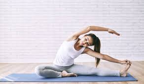

Atividades físicas
Caminhada ou corrida leve (30 min por dia)
Se você está começando, uma caminhada em ritmo confortável é perfeita. Escolha um horário tranquilo, como pela manhã ou fim de tarde, e aumente a duração e o ritmo gradualmente.
Treinamento de força
Realizar exercícios como flexões, agachamentos e levantamento de peso fortalece os músculos, melhora a postura e aumenta a densidade óssea, essencial para prevenir osteoporose.

Alongamentos diários
Alongue-se por 5 a 10 minutos ao acordar ou antes de dormir. Isso alivia tensões musculares acumuladas e melhora a mobilidade, prevenindo dores e lesões.
Atividades aeróbicas regulares
Práticas como natação, dança ou andar de bicicleta aumentam a capacidade pulmonar, ajudam na perda de peso e são ótimas para relaxar a mente.

Alimentação
Evite o consumo excessivo de ultraprocessados
Eles são ricos em conservantes, gorduras ruins e açúcares que aumentam o risco de doenças cardiovasculares e obesidade. Troque por opções caseiras sempre que possível.
Hidrate-se bem
A água regula a temperatura corporal, auxilia na digestão e melhora o funcionamento dos rins. Use uma garrafa para monitorar seu consumo ao longo do dia.
Proteínas magras
Alimentos como frango, peixe, ovos e fontes vegetais como lentilhas e grão-de-bico ajudam na construção muscular e na saciedade sem adicionar gordura em excesso.
Consuma fibras
Cereais integrais, sementes como chia e linhaça, além de frutas com casca, são essenciais para o funcionamento do intestino e para controlar o colesterol.
Planeje as refeições
Ao organizar cardápios semanais, você economiza tempo, evita desperdícios e faz escolhas alimentares mais saudáveis, como incluir vegetais variados e grãos integrais.
Hábitos
Estabeleça uma rotina de sono
Tente dormir e acordar no mesmo horário, mesmo nos fins de semana. Isso regula o relógio biológico, melhora a concentração e reduz o risco de doenças crônicas.
Evite o sedentarismo
Faça pequenas pausas a cada 50 minutos para levantar, esticar-se ou caminhar. Esse hábito combate dores nas costas e melhora a circulação.
Controle o tempo de tela
Use aplicativos para monitorar o tempo que passa em redes sociais e evite telas luminosas pelo menos uma hora antes de dormir, pois interferem na qualidade do sono.

Evite fumar e limite o consumo de álcool
Substitua esses hábitos por práticas que liberem endorfinas, como exercícios ou atividades criativas. Isso reduz o risco de câncer e doenças cardíacas.
Faça check-ups regulares
Agende visitas anuais ao médico para monitorar pressão arterial, colesterol e níveis de glicose. A prevenção é sempre o melhor caminho.
Reduza o estresse
Pratique técnicas de relaxamento, como meditação guiada ou exercícios respiratórios, que ajudam a controlar a ansiedade e aumentar o foco.